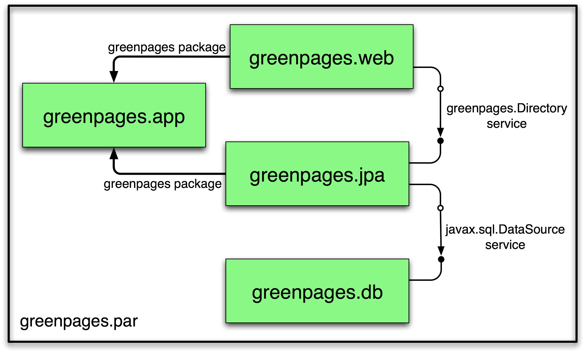

GreenPages is a simple application that allows users to search an online email address directory. Each listing in the directory details the relevant email addresses and the name of the owner. GreenPages has only three screens: the search screen, the results screen and the listing detail screen.
In the search screen, users can enter search criteria to be matched against the listings in the directory. The result screen displays any listings that match the criteria entered by the user. The listing detail screen shows all the data known about a given listing.
Despite its simplicity, GreenPages is designed to demonstrate many different Virgo Tomcat Server features and to act as a template from which other modular applications can be built. In particular, GreenPages demonstrates:
bundle dependencies with Import-Package,
load-time weaving with JPA and AspectJ,
bundle classpath scanning, and
service export, lookup and injection.
In addition to demonstrating common Virgo Tomcat Server features, GreenPages demonstrates integration with:
Spring Framework 3.0;
FreeMarker 2.3;
EclipseLink 1.0.0;
H2 1.0.71; and
Commons DBCP 1.2.2.
The GreenPages application is packaged as a PAR file containing four bundles.
|  |
The greenpages.db bundle provides access to an external database and publishes a
javax.sql.DataSource service.
The greenpages.app bundle exports a greenpages package containing
Directory and Listing interfaces.
The greenpages.jpa bundle imports the greenpages package and
uses the javax.sql.DataSource service to
access the external database and publishes its contents as a greenpages.Directory service.
The greenpages.web web application bundle imports the greenpages package and uses the
greenpages.Directory service to respond to web requests.